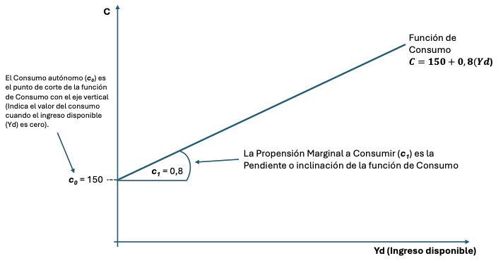
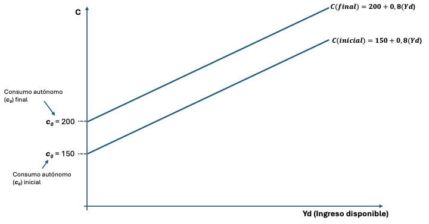
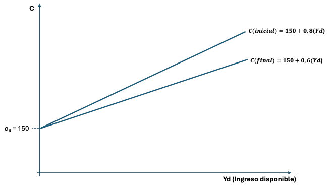
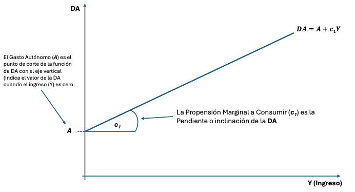
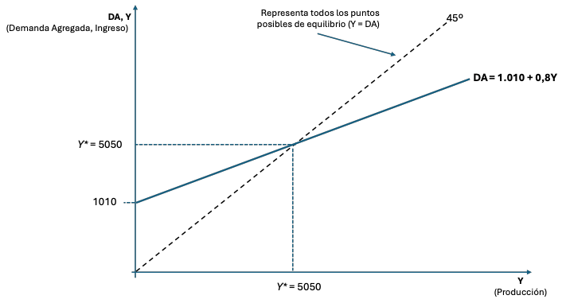

En esta Nota de Estudio explicaremos los conceptos clave y las relaciones principales del Capítulo 3 del libro de Blanchard, haciendo énfasis en la demanda agregada, la función de consumo, el equilibrio en el mercado de bienes, y sus representaciones gráficas. Para facilitar la comprensión, se incluirán ejemplos y un ejercicio final.
1. Demanda Agregada: Componentes y Descripción Detallada
La Demanda Agregada representa el gasto total en bienes y servicios de los hogares, empresas, gobierno y resto del mundo en un período determinado. Es un concepto clave para entender cómo las variaciones en el gasto afectan el nivel de producción y empleo en la economía. La demanda agregada se descompone en varios componentes, cada uno de los cuales tiene su propia dinámica y determinantes.
En nuestra clase utilizaremos las iniciales DA para referirnos a la demanda agregada, y se refiere a la misma variable que el libro denomina Z.
a. Consumo (C)
El consumo es el gasto de los hogares en bienes y servicios. Es, por lo general, el componente más grande de la demanda agregada. Dentro del consumo podemos encontrar:
- Bienes duraderos nuevos: Como automóviles, electrodomésticos, y muebles, que son bienes que duran varios años.
- Bienes no duraderos: Como alimentos, ropa, y combustibles, que se consumen rápidamente.
- Servicios: Gastos en educación, salud, transporte, y otros servicios que los hogares compran regularmente.
Ejemplo: Durante el año 2021, el retiro de fondos previsionales en Chile permitió a muchas familias aumentar su consumo de muchos bienes, en particular de bienes duraderos, como la compra de automóviles, electrodomésticos o muebles para el hogar. Este aumento en el consumo impactó directamente en la demanda agregada, incrementando las ventas en sectores clave de la economía.
b. Inversión (I)
La inversión es el gasto realizado por las empresas en bienes de capital, como maquinaria, equipos, y construcciones, que se utilizan para producir otros bienes en el futuro. La inversión también incluye la acumulación existencias o inventario (bienes producidos por las empresas que no se han vendido aún y se almacenan) y la compra de viviendas nuevas por parte de las familias.
- Inversión no residencial: Comprende la compra de bienes de capital por parte de las empresas, como nuevas plantas, maquinaria o tecnología.
- Inversión residencial: Es la compra de viviendas por parte de las familias. Aunque es un gasto realizado por los hogares, se clasifica como inversión porque la vivienda genera un flujo de servicios a lo largo del tiempo.
- Variación de existencias: Bienes producidos que no se han vendido y se acumulan como inventario. Cuando se venden a las familias, se restan de la cuenta de Inversión y se suman a la cuenta de consumo.
Ejemplo: En Chile, en los últimos años, la inversión en energías renovables, como parques solares y eólicos, ha crecido significativamente, lo cual forma parte de este componente de la demanda agregada.
c. Gasto Público (G)
Incluye todas las compras de bienes y servicios realizadas por el gobierno a nivel nacional, regional y local. Este componente incluye el gasto en infraestructura, educación, salud, defensa, y otros.
Es importante destacar que el gasto público no incluye las transferencias, como pensiones o subsidios, ya que estas no son compras de bienes y servicios.
Ejemplo: En 2020, el gobierno chileno incrementó significativamente su gasto público como parte de las medidas para mitigar los efectos económicos de la pandemia de COVID-19. Este aumento en el gasto público, destinado a la compra de bienes y servicios para los programas de apoyo social, salud y reactivación económica, tuvo un impacto directo en la demanda agregada.
d. Exportaciones Netas (X - M)
Las exportaciones netas representan la diferencia entre las exportaciones (X) y las importaciones (M) de un país. En una economía abierta, las exportaciones agregan demanda por bienes y servicios nacionales, mientras que las importaciones restan demanda porque representan el gasto en bienes y servicios producidos en el extranjero.
- Exportaciones (X): Bienes y servicios vendidos a otros países.
- Importaciones (M): Bienes y servicios comprados a otros países.
Ejemplo: Chile es un país altamente dependiente de las exportaciones, especialmente de materias primas como el cobre, el vino y la fruta. Un aumento en la demanda mundial de cobre, por ejemplo, incrementa las exportaciones chilenas, lo que a su vez aumenta la demanda agregada. Sin embargo, si las importaciones crecen más rápido que las exportaciones, el efecto neto en la demanda agregada puede ser negativo.
Economía Cerrada: Simplificación del Análisis
Para simplificar el análisis, se asume una economía cerrada. Esto significa que no se consideran las interacciones con otros países). En este contexto, las exportaciones netas (X−M) se asumen como cero, y la demanda agregada se reduce a tres componentes principales:
Este enfoque es útil para comprender cómo los factores internos, como el consumo, la inversión y el gasto público, afectan la economía sin la complicación adicional de los flujos internacionales.
2. Ecuación de Conducta de los Consumidores
La función de consumo describe cómo el consumo de los hogares depende de la renta disponible (YD), que es la renta después de impuestos. Se expresa como:
- Consumo Autónomo (c0): Es el nivel de consumo cuando la renta disponible es cero. Representa el consumo mínimo que los hogares deben realizar, incluso si no tienen ingresos, a menudo financiado por ahorros o préstamos.
- Propensión Marginal a Consumir (c1): Es la fracción de cada unidad adicional de renta disponible que se destina al consumo. La propensión marginal a consumir siempre es un número mayor que cero y menor que 1 (0 < c1 <1). Por ejemplo, un valor de c1 = 0,8 significa que, por cada 1.000 pesos adicionales de renta, los hogares chilenos consumen 800 pesos y ahorran 200 pesos.
- Renta o Ingreso Disponible (YD): Es la fracción del ingreso que los consumidores pueden efectivamente utilizar para consumir. Es igual al Ingreso o Renta (Y) menos los impuestos netos. A su vez, los impuestos netos (T) son iguales a los impuestos brutos (TB) menos las transferencias (TR). YD=Y-T= Y -(TB-TR) = Y -TB+TR. Esta ecuación nos dice que los impuestos reducen la renta disponible y las transferencias aumentan la renta disponible. Nótese que cuando no tenemos datos de transferencias, asumimos que estas son cero y T = TB.
La ecuación de conducta de los consumidores refleja la idea de que el consumo aumenta con la renta disponible, pero no de manera proporcional, ya que parte del ingreso adicional se destina al ahorro.
3. Interpretación de Cambios en c0 y c1
- Aumento en c0: Si, por ejemplo, las familias chilenas se vuelven más optimistas sobre el futuro, podrían decidir consumir más, aunque su renta no varíe, aumentando c0 (por ejemplo, endeudándose o tomando préstamos). Esto desplazaría la función de consumo hacia arriba, elevando el consumo total en todos los niveles de renta.
- Reducción en c1: Un aumento en la incertidumbre económica podría llevar a las familias a ahorrar más y consumir menos, reduciendo c1. Esto haría que, por cada peso adicional de renta, se consuma una menor proporción.
4. Gráfica de la Función de Consumo
La función de consumo, C = c0 + c1(YD), se grafica como una línea recta con pendiente positiva que relaciona el Consumo (C) con la Renta Disponible (YD).
Ejemplo:
Supongamos que tenemos una función específica de Consumo:

En la gráfica, la intersección con el eje vertical (ordenada en el origen) es c0 y la pendiente es c1. Un cambio en c0 desplaza la curva hacia arriba o hacia abajo, mientras que un cambio en c1 altera la pendiente o inclinación de la curva.
Caso1: c0 aumenta a 200

Caso2: c1 baja a 0,6

5. La Demanda Agregada y su Representación Gráfica
En la sección 1 mostramos que la demanda agregada en una economía cerrada se representa matemáticamente con la siguiente ecuación:
En la sección 2 desarrollamos un marco para comprender la conducta agregada de los consumidores, y mostramos que el consumo tiene un componente autónomo (c0) y un componente que depende de la renta disponible (c1*YD). También mostramos que la renta disponible es igual a la renta (Y) menos los impuestos netos (T): YD = Y - T
Por ahora, supondremos que la inversión (I) y el Gasto Público (G) son exógenos (no dependen del ingreso ni de ninguna otra variable).
La ecuación de la demanda agregada es entonces:
Para simplificar el análisis, a los componentes de la demanda agregada que no dependen del Ingreso los denominaremos Gasto Autónomo (A).
Entonces la ecuación de la Demanda Agregada simplificada es y se representa gráficamente como una línea que relaciona la variable DA con la variable Ingreso (Y):
El siguiente gráfico muestra los detalles relevantes de la función de demanda agregada.

La recta correspondiente a la de demanda agregada tiene pendiente positiva porque un aumento en la renta genera mayor consumo y, por lo tanto, mayor demanda. Sin embargo, su pendiente es menor a 1, debido a que la propensión marginal a consumir es un número entre 0 y 1 (0 < c1 <1).
Desplazamientos de la curva de demanda agregada pueden ocurrir por cambios en el consumo autónomo (c0), la inversión (I), o el gasto público (G). Por ejemplo, un aumento en el gasto público desplaza la curva hacia arriba, aumentando la demanda agregada para cualquier nivel de renta.
6. Equilibrio en el Mercado de Bienes
El equilibrio en el mercado de bienes ocurre cuando la producción (Y) es igual a la demanda agregada (DA). La condición de equilibrio es:
Sustituyendo la ecuación de la demanda agregada en el lado derecho de la condición de equilibrio, tenemos:
Resolviendo para Y (despejando a Y en el lado izquierdo), obtenemos el nivel de producción de equilibrio. Este equilibrio implica que toda la producción es demandada, sin que haya exceso de producción o exceso de demanda.
Como antes, llamaremos A al gasto autónomo (c0 − c1T + I + G). Por lo tanto, el mercado de bienes está en equilibrio cuando:
Recordemos que la propensión marginal a consumir c1 es definida como un número entre 0 y 1: (0 < c1 <1).
Por esto, la expresión (11-c1) es entonces un número mayor que 1.
Ejemplos:
- Si c1 = 0,1 entonces (11-c1)=(11-0,1) = 10,9 = 1,11
- Si c1 = 0,5 entonces (11-c1)=(11-0,5) = 10,5 = 2
- Si c1 = 0,8 entonces (11-c1)=(11-0,8) = 10,2 = 5
- Si c1 = 0,9 entonces (11-c1)=(11-0,9) = 10,1 = 10
Como la expresión a la expresión (11-c1) es un número mayor que uno, cualquier cambio de alguno de los componentes del gasto autónomo (c0T, G o I) tiene un efecto "multiplicado" sobre el Ingreso de equilibrio (resulta en un cambio mayor al cambio de ese componente).
Por esta característica, a la expresión (11-c1) la llamaremos "El Multiplicador" (m).
Ejemplos:
- Cuando el multiplicador (m) es igual a 2 (c1 = 0,5), un aumento del gasto público (G) de 100 unidades monetarias (u.m.) resulta en un aumento de la producción de equilibrio (Y) igual a 200 u.m. (2*100)
- Cuando el multiplicador (m) es igual a 5 (c1 = 0,8), un aumento del gasto público (G) de 100 unidades monetarias resulta en un aumento de la producción de equilibrio (Y) igual a 500 u.m. (5*100).
- Cuando el multiplicador (m) es igual a 10 (c1 = 0,9), un aumento del gasto público (G) de 100 unidades monetarias resulta en un aumento de la producción de equilibrio (Y) igual a 1.000 u.m. (10*100)
7. Representación Gráfica del Equilibrio en el Mercado de Bienes
Para facilitar la comprensión de la representación gráfica del equilibrio en el mercado de bienes utilizaremos un ejemplo.
Datos:
- c0 = 50
- c1 = 0,8
- T = 800
- I = 700
- G = 900
Paso 1: Encontramos la ecuación de la Demanda Agregada que se corresponde con los datos suministrados:
Paso 2: Encontramos el valor de la producción de equilibrio:
Paso 3: Representamos gráficamente el equilibrio.
Dado que en el equilibrio se cumple que Y = DA (Producción igual a demanda agregada e igual a ingreso), entonces representamos la producción de equilibrio en el mercado de bienes como un punto en una línea de 45º (todos los puntos de una línea de 45º representan el mismo valor en los dos ejes).
El valor particular de este punto (Producción = Demanda Agregada = Ingreso = 5.050, en nuestro ejemplo) es representado por la intersección de la línea de Demanda Agregada con esta línea de 45º:

Es importante reconocer tres tipos de ecuaciones en los modelos económicos:
- Identidades (definiciones de una variable). Ejemplo: La ecuación de la renta disponible, YD = Y - T.
- Ecuaciones de Conducta (definen cómo se comporta un agente económico). Ejemplo: La ecuación de conducta de los consumidores, C = c0 + c1YD.
- Condiciones de Equilibrio (establecen las condiciones esenciales de un equilibrio). Ejemplo: El equilibrio del mercado de bienes implica que Y = DA.
Ejercicio:
Supongamos una economía que presenta los siguientes datos:
- c0 = 150
- c1 = 0,6
- T = 1.000
- I = 800
- G = 1.100
- Representa gráficamente la función de Consumo.
- ¿Cuál es el valor del multiplicador? Interpreta el significado de este valor.
- ¿Cuál es el valor de la producción de equilibrio? Interpreta el significado de este valor.
- ¿Cuál es el valor del Consumo? Representa el punto correspondiente a este valor en el gráfico dibujado en la respuesta (a).
- Representa gráficamente el equilibrio del mercado de bienes de esta economía.
- ¿Cómo cambia la producción de equilibrio si el gobierno incrementa el gasto público en 120 u.m.?
- Representa el nuevo equilibrio en el mismo gráfico en que representaste el equilibrio inicial.